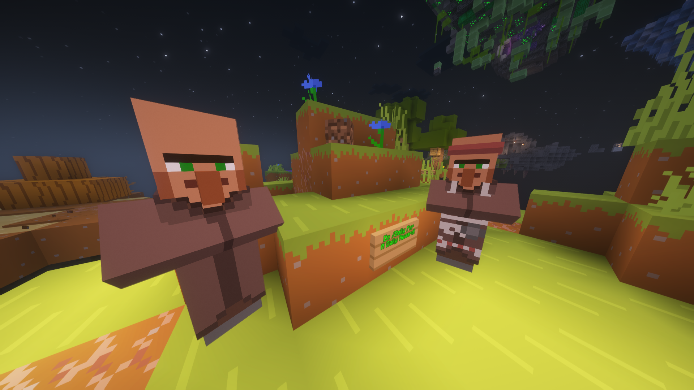

WorldsGen's main point is gear, with armor and weapons. All of these gears have their own island, and there are always 5 weapons and 5 armors. These gears are always sorted by tiers, meaning that the maximum sword of the first island is Tier 5, since there are always 5. The higher the tier, the better the gear, but sometimes a sword is suddenly worse than before. This is done for gear balancing so that your swords don’t become too OP when you're at an island tier that is not supposed to give you such good items.
